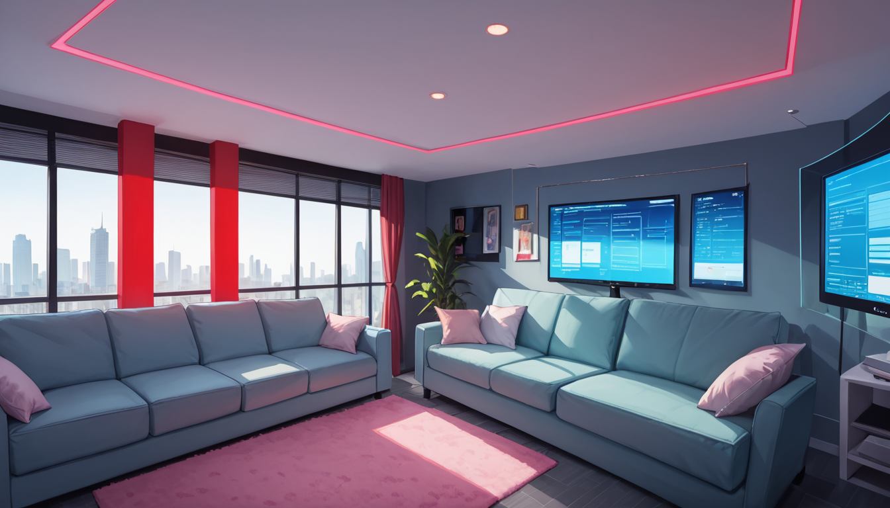

잘 몰라서 그런데, 지난밤 늦게 하드 드라이브를 정리하다 보면 갑자기 궁금한 게 하나 생길 때가 있죠. 특히 3 일 만에 판매가 중단된 게임 데이터를 보며 '왜 이 정도로 줄어든 걸까'라는 생각이 드는 순간이 있어요. 사실은 개발자로서 본인이 놓친 디테일을 찾아내는 과정이기도 하니까요. ^^
**## 버전별 지역 변화와 난이도 조절의 의미**
데모 버전에서는 등장하지 않던 적이 최종 판에 추가된 경우가 종종 있었죠. 예를 들어, 초기 맵 구성에서 제외되었던 보스나 적의 배치 패턴을 살펴보면, 사용자의 체력 회복 속도를 고려한 흐름 변화가 명확하게 드러납니다. 단순히 숫자를 늘린 게 아니라, 플레이어가 어느 구간까지 스트레스를 받을지 의도적으로 설계된 결과라 볼 수 있어요. 마치 소프트웨어 배포 전 초기 테스터 환경과 실제 출시 버전의 차이와 흡사하죠.
**## 가산 프로그램 개발 시 고려할 점**
이런 맥락에서 '가산 프로그램 개발 추천'을 들었을 때 떠오르는 건, 기본 기능 외에 선택적으로 제공되는 요소들의 중요성입니다. 데모에서의 미완성 구간들이 최종 판에서는 완성된 콘텐츠로 재탄생한 것처럼, 개발 과정에서 생략되거나 수정된 부분도 결국 제품의 완성도를 결정하는 핵심 변수가 되니까요. 사용자가 직접 판단해야 하는 조건은 단순히 기능 유무보다는 이러한 숨겨진 밸런스 조정 데이터가겠죠.
결국 중요한 건 개발자가 의도하지 않았던 버그나 과오를 어떻게 보완할지, 혹은 사용자의 체감 난이도가 어떤 기준에서 조절되어야 하는지를 미리 예상하는 능력입니다. 다음에 이런 작업을 하신다면, 최소 두 가지 조건을 체크리스트로 삼아보세요. 하나는 출시 전 시뮬레이션 데이터의 일관성이고, 다른 하나는 실제 배포 후 피드백에 따른 유연한 대응 구조예요.
함께 보면 좋은 정보
- 심층 정보와 실제 데이터는 gangnam-doorway2를 참고하세요.
- 자세한 기술 명세 가이드는 공식 가이드 커뮤니티를 참고하십시오.